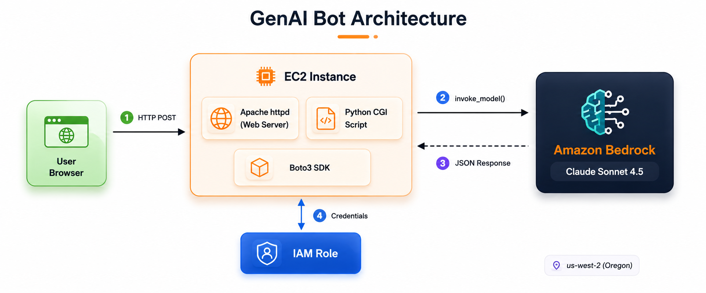

In this session, Todd Pritsky walked the class through building a real, working Generative AI chatbot from scratch — no prior coding experience required. Starting from a blank EC2 instance, the group assembled a complete web-hosted AI bot powered by Amazon Bedrock and Claude in under an hour.
The goal wasn't just to get something working. Todd's teaching philosophy is about starting small and adding layers. The simple 40-line Python bot built today is the same foundation that eventually becomes a sophisticated multi-hundred-line assistant with memory, a persona, a knowledge base, and image generation capabilities. By the end of this session, you will understand every piece of that foundation.

Figure 1: The complete GenAI bot architecture — browser → EC2 (Apache + Python) → Boto3 → Amazon Bedrock → Claude model
⚡ Key Point: This session covered a normal lecture and live demonstration — not a formal graded lab. The companion lab document (Simple GenAI Bot with Amazon EC2 and Amazon Bedrock) contains the step-by-step instructions you can follow on your own.
What You Will Build
- A publicly accessible web page running on EC2
- A Python CGI script that takes user input and calls Amazon Bedrock
- An IAM role that gives EC2 permission to talk to Bedrock
- A working one-shot AI bot you can extend with memory, personality, and a knowledge base
Prerequisites
- AWS account with console access
- Familiarity with EC2 basics (covered in earlier sessions)
- Basic understanding of IAM (covered in earlier sessions)
- Completion of Volcarium labs is assumed; if this is your first session, speak with Todd offline
💰 Cost Note: Running this exercise as written and then terminating the EC2 instance costs only pennies. However, you are using your own AWS account — costs are real. Monitor your billing dashboard and be frugal. If you just started your account, some services may still be free-tier eligible.